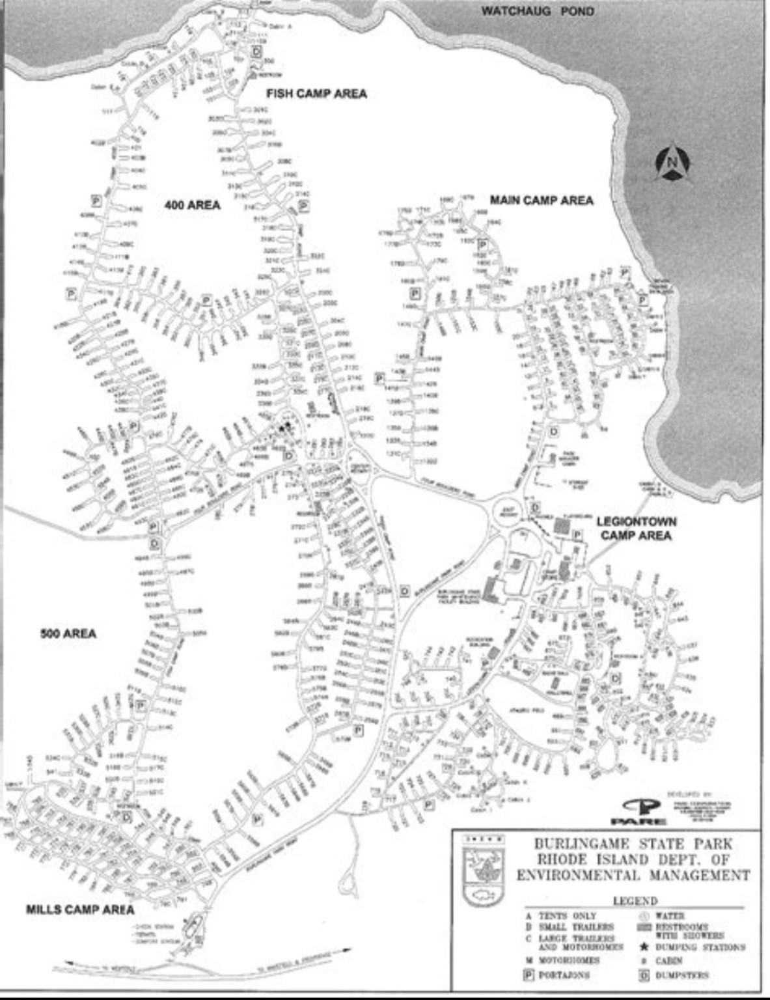
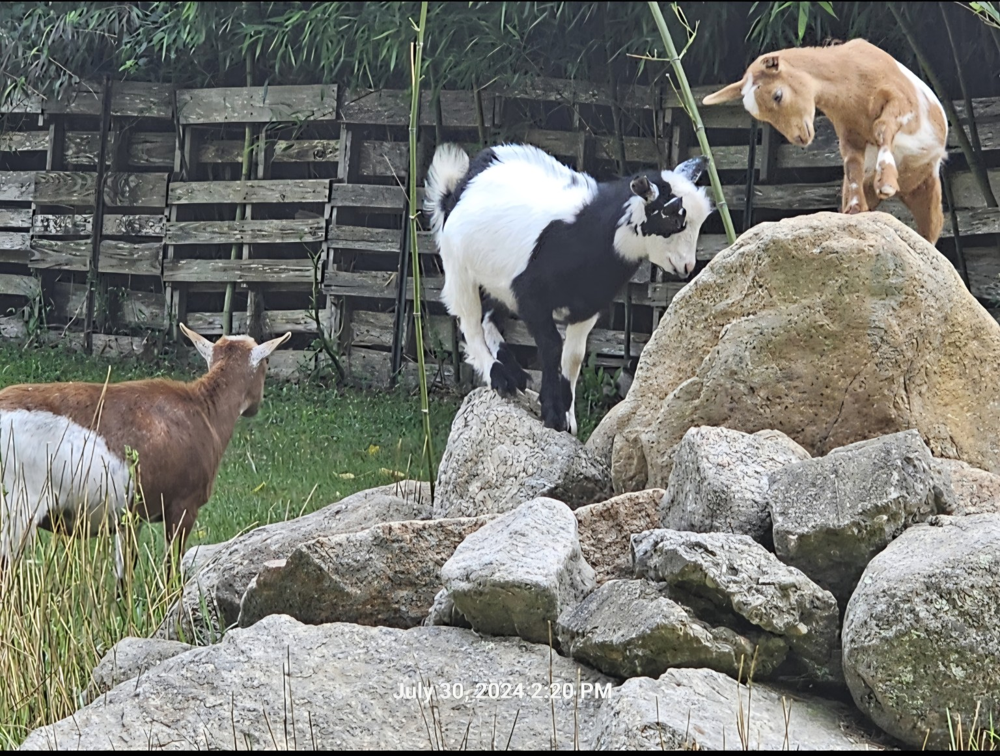
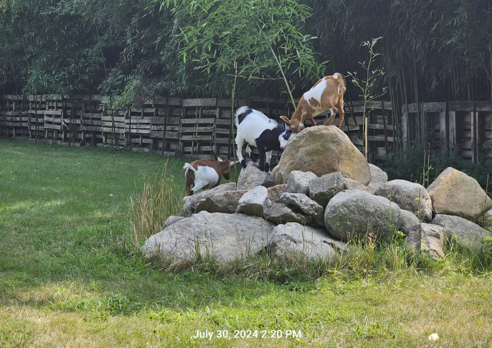
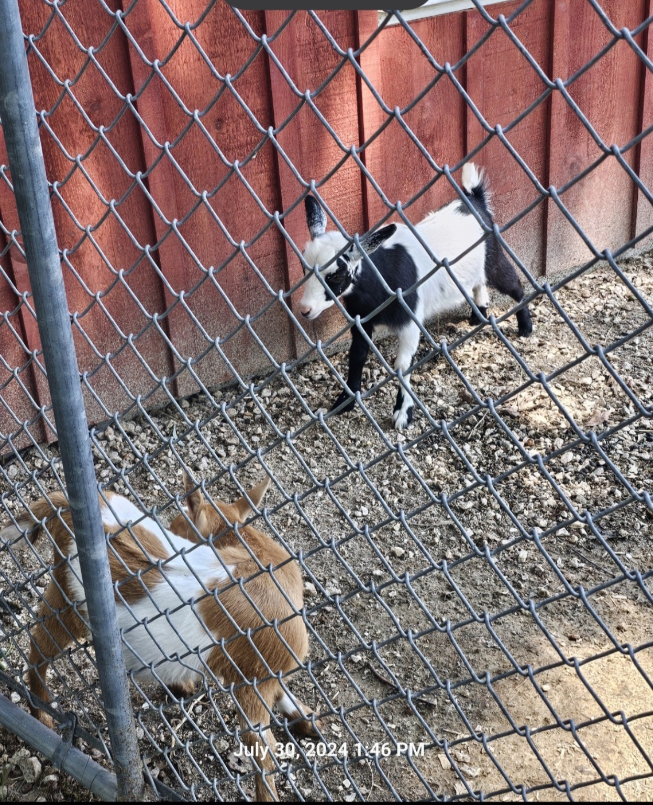
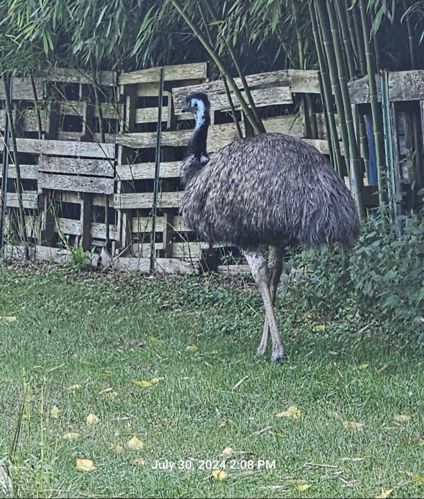

Sometimes the best camping traditions begin with one simple question: “Want to go check out that old cemetery?”
A rough beginning
Our trip to Burlingame State Park Campground in Charlestown, Rhode Island, started off a little rough. We were still tent campers at that point, and after unpacking we discovered that one of the poles for our tent was missing. So, before the vacation could really begin, it was off to Walmart for a replacement.
It was not exactly the start we had planned, but thankfully that little setback did not stop us from having one of our most memorable family camping trips.

A campground full of history
The state park is huge. I had been there before, and although there were plenty of side trips available, one of the most interesting things was actually inside the campground itself: there are a number of historic cemeteries scattered throughout the park.
Rhode Island has done a fantastic job cataloging its cemeteries. One of them, Historic Cemetery CH058, is positioned close to the campsites—approximately 10 feet east of campsite #145—and has remnants of an old stone wall along its west and north sides.

The walk that changed future trips
Although I did not know it at the time, I was about to suggest something to the family that would change our future trips. I asked if everyone wanted to walk to the cemetery closest to our campsite.
To my surprise, the family said yes.
From that one, it was off to find another cemetery—one that no longer had visible burials, although it previously did. That simple walk became the beginning of something. Now the young’uns enjoy adding a cemetery visit whenever one can be worked into a trip.
Looking back, this was not just another camping vacation. It was the trip that started a new family tradition.
Unexpected neighbors
The trip also gave us a few wonderfully unexpected animal encounters. The goats seemed completely at home climbing over the rocks, and an emu was certainly not something we expected to meet during a Rhode Island camping trip.




Beach day and campfire night
We also spent a day at Misquamicut Beach and, of course, did a little souvenir hunting. Back at camp, the day ended the way a good camping day should—with family gathered around the fire.

Trail Tater Take
Would we return? Yes.
What stood out? The size of the park, the nearby beach, the unexpected animals, and the historic cemeteries hidden among the campsites.
What made it memorable? It quietly changed the way our family travels. Cemetery stops became part of the adventure rather than a detour from it.
{kind=link}
{kind=link}
{kind=link}
{kind=link}
{kind=link}
{kind=link}
{kind=link}
{kind=link}